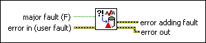

Set Fault VI
Owning Palette: Faults VIs
Requires: Base Development System (Real-Time, Windows)
Creates a fault. When the major fault input is TRUE, this VI triggers fault mode. Use the code element of the error in (user fault) input cluster to specify the fault code.

 Add to the block diagram Add to the block diagram |
 Find on the palette Find on the palette |